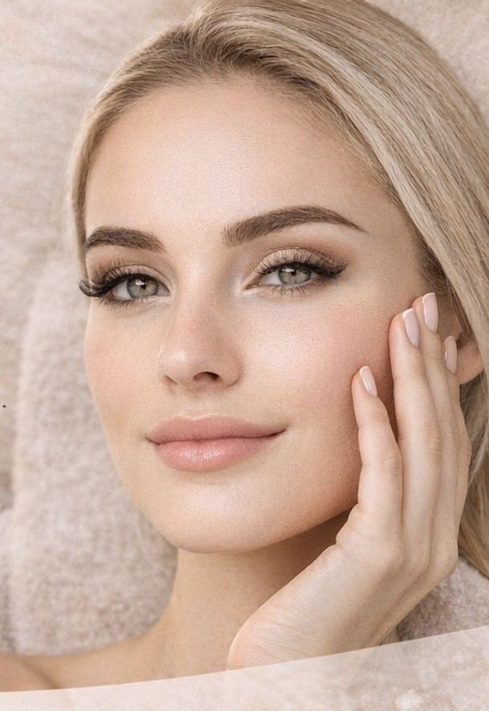

Lash lift og brow lamination i Herlev
Løftede vipper og velformede bryn – med dine egne hår. Lash lift, brow lamination og farvning fra 195 kr., udført af lægeeksamineret kosmetolog med Elleebana-certificering i lash lift.
Vipper og bryn – priser
Ny kunde? Du får 20 % på første besøg.
- Book
Farvning af vipper eller bryn
- Book
Farvning af bryn inkl. retning
- Book
Farvning af vipper og bryn inkl. retning
- Book
Brow lift / brow lamination inkl. farvning, retning og biotin
- Book
Brow lamination
Brow lamination alene – uden farvning.
- Book
Lash lift Deluxe med farve inkl. biotin
- Book
Lash lift & brow lift inkl. farvning og retning

Lash lift – længere og mere åbne vipper
Lash lift løfter og buer dine egne vipper fra roden, så de ser længere og mere åbne ud – uden extensions. Farvning og en plejende biotinbehandling er inkluderet. Behandlingen tager ca. 50 minutter, koster 625 kr. og holder typisk 6–8 uger.
Efterpleje: undgå vand, damp, sauna og mascara de første 24 timer. Derefter kan du bruge makeup som normalt.
Book lash liftBrow lamination – fyldige, velplejede bryn
Brow lamination – også kaldet brow lift – former og fikserer brynhårene, så brynene ser fyldigere, mere ensartede og velplejede ud. Det er ikke botox eller kirurgi. Farvning, retning og biotinpleje er inkluderet, og prisen er 650 kr. Resultatet holder typisk 4–8 uger.
Vil du have både vipper og bryn? Lash lift & brow lift sammen koster 795 kr.
Book brow lamination
Lash lift eller vippe extensions?
Lash lift løfter og farver dine egne vipper og kræver ingen opfyldning. Vippe extensions er kunstige vipper, der sættes på dine egne én for én og skal opfyldes jævnligt. Vi tilbyder ikke vippe extensions, men lash lift er et naturligt alternativ uden opfyldning.
Vil du have bryn, der holder i år og ikke uger? Se permanent makeup bryn.
Kunder kommer fra Herlev, Ballerup, Gladsaxe, Rødovre, Husum, Brønshøj, Bagsværd og resten af Københavns omegn. Adressen oplyses ved bekræftet booking.
Ofte stillede spørgsmål om vipper og bryn
Hvad er lash lift?
Lash lift løfter og buer dine egne vipper fra roden, så de ser længere og mere åbne ud – uden extensions. Hos os er farvning og en plejende biotinbehandling inkluderet. Behandlingen tager ca. 50 minutter og koster 625 kr.
Hvor længe holder lash lift?
Et lash lift holder typisk 6–8 uger, afhængigt af dine vippers naturlige vækst. Resultatet forsvinder gradvist, efterhånden som nye vipper vokser frem.
Er lash lift skadeligt for vipperne?
Nej, ikke når det udføres korrekt med professionelle produkter og den rette virketid. Vi afslutter med en plejende biotinbehandling. Undgå at få lavet lash lift oftere end hver 4. uge, så vipperne ikke overbehandles.
Hvad er brow lamination / brow lift?
Brow lamination – også kaldet brow lift – er en behandling, hvor brynhårene formes og fikseres, så brynene ser fyldigere, mere ensartede og velplejede ud. Det er ikke botox eller kirurgi. Hos os er farvning, retning og biotinpleje inkluderet.
Hvor længe holder brow lamination?
Brow lamination holder typisk 4–8 uger, afhængigt af din hårvækst og efterpleje. Undgå vand, damp og makeup på brynene de første 24 timer.
Hvad er forskellen på lash lift og vippe extensions?
Lash lift løfter og farver dine egne vipper og kræver ingen opfyldning. Vippe extensions er kunstige vipper, der sættes på dine egne én for én og skal opfyldes jævnligt. Vi tilbyder ikke vippe extensions, men lash lift er et naturligt alternativ.
Hvad koster lash lift og brow lamination i Herlev?
Lash lift med farve og biotin koster 625 kr., brow lamination inkl. farvning og retning koster 650 kr., og lash lift og brow lift sammen koster 795 kr. Farvning af bryn inkl. retning koster 250 kr. Nye kunder får 20 % på første besøg.
Hvordan passer jeg på vipperne efter lash lift?
Undgå vand, damp, sauna og mascara på vipperne de første 24 timer, og sov ikke med ansigtet ned i puden den første nat. Derefter kan du bruge makeup som normalt. Et plejende serum eller en vippeolie holder vipperne bløde mellem behandlingerne.
Book lash lift eller brow lamination i Herlev
Ny kunde? Du får 20 % på dit første besøg. Vælg behandling, dag og tidspunkt online – eller ring på 28 68 93 84.
Book tid online